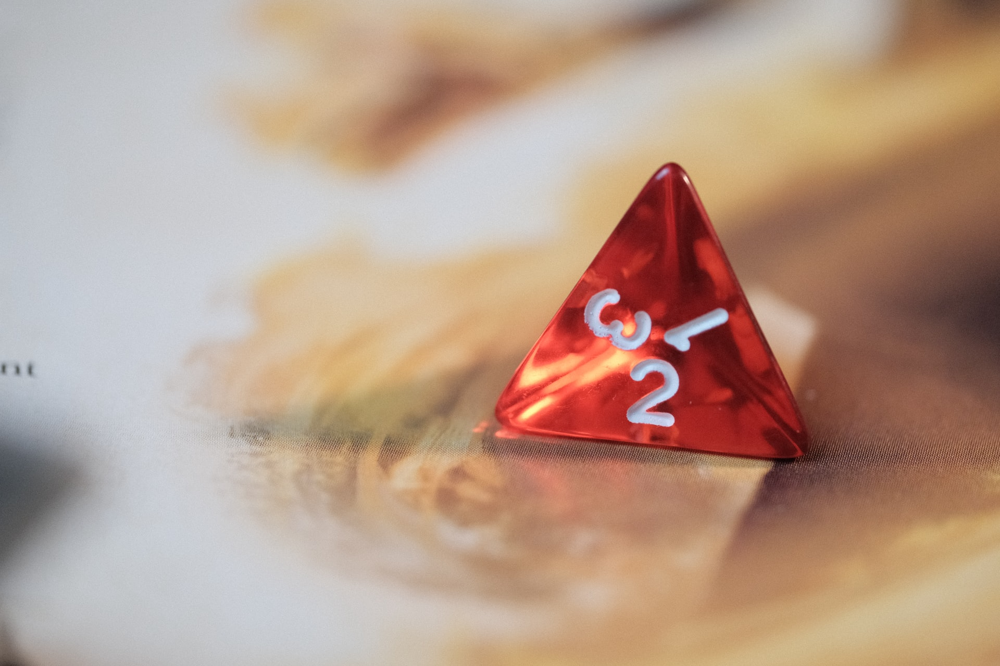

A tabletop role-playing game (typically abbreviated as TRPG or TTRPG), also known as a pen-and-paper role-playing game, is a form of role-playing game (RPG) in which the participants describe their characters' actions through speech. Participants determine the actions of their characters based on their characterization, and the actions succeed or fail according to a set formal system of rules and guidelines. Within the rules, players have the freedom to improvise; their choices shape the direction and outcome of the game. 
Unlike other types of role-playing games, tabletop RPGs are often conducted like radio drama: only the spoken component of a role is acted. This acting is not always literal, and players do not always speak exclusively in-character. Instead, players act out their role by deciding and describing what actions their characters will take within the rules of the game. In most games, a specially designated player typically called the game master (GM) creates a setting in which each player plays the role of a single character. The GM describes the game world and its inhabitants; the other players describe the intended actions of their characters, and the GM describes the outcomes. Some outcomes are determined by the game system, and some are chosen by the GM. Specific tabletop RPGs may have a unique name for the GM role, such as Dungeon Master (DM) in Dungeons & Dragons, Referee in all Game Designers' Workshop games, or Storyteller for the Storytelling System.